Chapter 19 Rosenbaum-Style  -Values for Matched Observational Studies with Unmeasured Confounding
-Values for Matched Observational Studies with Unmeasured Confounding
Rosenbaum, 1987b () introduced a sensitivity analysis technique for matched observational studies. Although it works for general matched studies (Rosenbaum, 2002b, ), the theory is most elegant for one-to-one matching. Different from Chapters 17 and 18, Rosenbaum-type sensitivity analysis works best for matched observational studies for testing the sharp null hypothesis of no individual treatment effect.
96 A model for sensitivity analysis with matched data
Consider a matched observational study, with
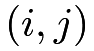
indexing unit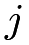
in pair
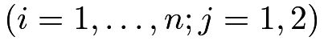
. With exactly matched pairs, unit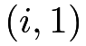
and unit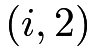
have the same covariates .
Assume IID sampling, and extend Definition 11.1 to define the propensity score as
.
Assume IID sampling, and extend Definition 11.1 to define the propensity score as
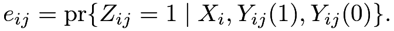 |
Let
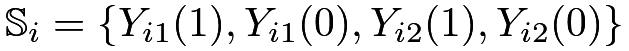
denote the set of all potential outcomes within pair.
Conditioning on the event that 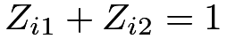
, we have |
 |
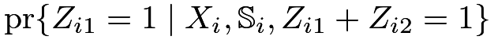 |
||
|
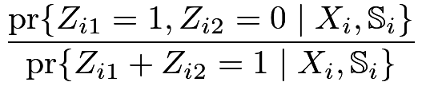 |
|||
|
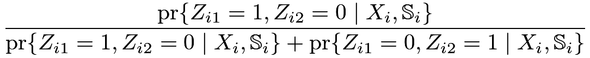 |
|||
|
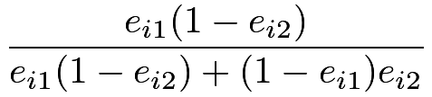 |
Define
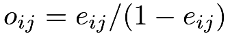
as the odds of the treatment for unit , and we have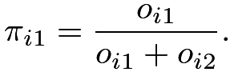 |
Under ignorability,
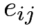
is only a function of, and therefore, 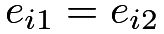
and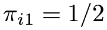
. Thus the treatment assignment mechanism conditional on covariates and potential outcomes is equivalent to that from an MPE with equal treatment and control probabilities. This is a strategy to analyze matched observational studies we discussed in Chapter 75.In general, is also a function of the unobserved potential outcomes, and it can range from  to
to  .
Rosenbaum, 1987b ()’s model for sensitivity analysis imposes bounds on the odds ratio
.
Rosenbaum, 1987b ()’s model for sensitivity analysis imposes bounds on the odds ratio
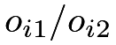
.Assumption 19.1 (Rosenbaum’s sensitivity analysis model)
The odds ratios are bounded by
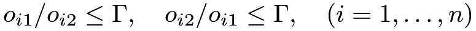 |
for some pre-specified 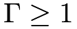
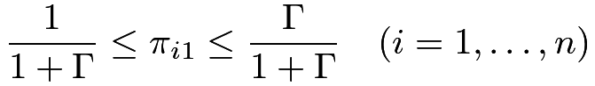 |
for some pre-specified .
Under Assumption 19.1, we have a biased MPE with unequal and varying treatment and control probabilities across pairs. When
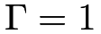
, we have and thus a standard MPE. Therefore,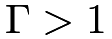
measures the deviation from the ideal MPE due to the omitted variables in matching.97 Worst-case -values under Rosenbaum’s sensitivity analysis model
Consider testing the sharp null hypothesis
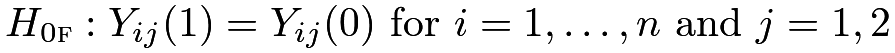 |
based on the within-pair differences
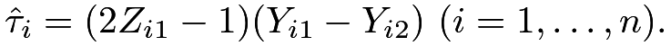
Under ,
, 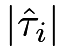
is fixed but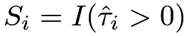
is random if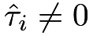
. Consider the following class of test statistics: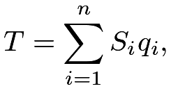 |
where
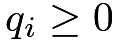
is a function of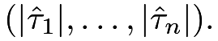
Special cases include the sign statistic, the pair statistic (up to some constant shift), and the Wilcoxon signed-rank statistic:
statistic (up to some constant shift), and the Wilcoxon signed-rank statistic:
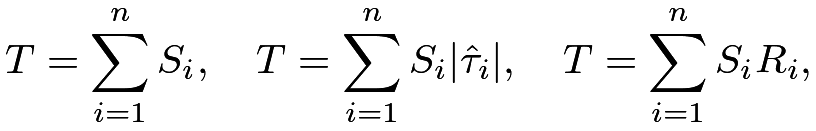 |
where
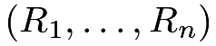
are the ranks ofWhat is the null distribution of the test statistic  under Assumption 19.1 with a general
under Assumption 19.1 with a general
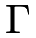
? It can be quite complicated because Assumption 19.1 does not fully specify the exact values of the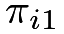
’s. Fortunately, we do not need to know the exact distribution of but rather the worst-case distribution of that yields the largest -value under Assumption 19.1. This worst-case distribution corresponds to
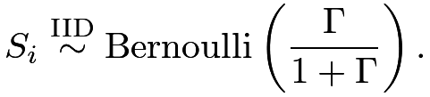 |
The corresponding distribution of has mean
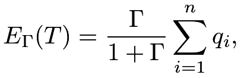 |
and variance
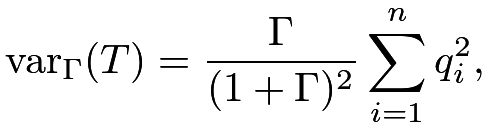 |
with a Normal approximation
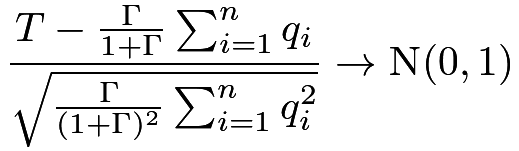 |
in distribution.
In practice, we can report a sequence of -values as a function of .
98 Examples
98.1 Revisiting the LaLonde data
We conduct Rosenbaum-style sensitivity analysis in the matched LaLonde data. Using the Matching package, we can construct the matched dataset.
We consider using the test statistic
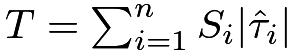
. Under the ideal MPE with , we can simulate the distribution of and obtain the -value 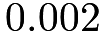
, as shown in the first subfigure in Figure 23. With a slightly larger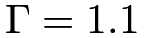
, the worst-case distribution of shifts to the right, and the -value increases to 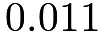
. If we further increase to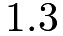
, then the worst-case distribution of shifts further and the -value exceeds 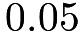
. Figure 24 shows the histogram of the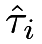
’s and the-value as a function of ; 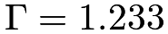
measures the maximum confounding that we can still reject the null hypothesis at level .We can also use the senmw function in the sensitivitymw package to obtain a sequence of -values against .
Figure 24 shows the plot of the -value against .
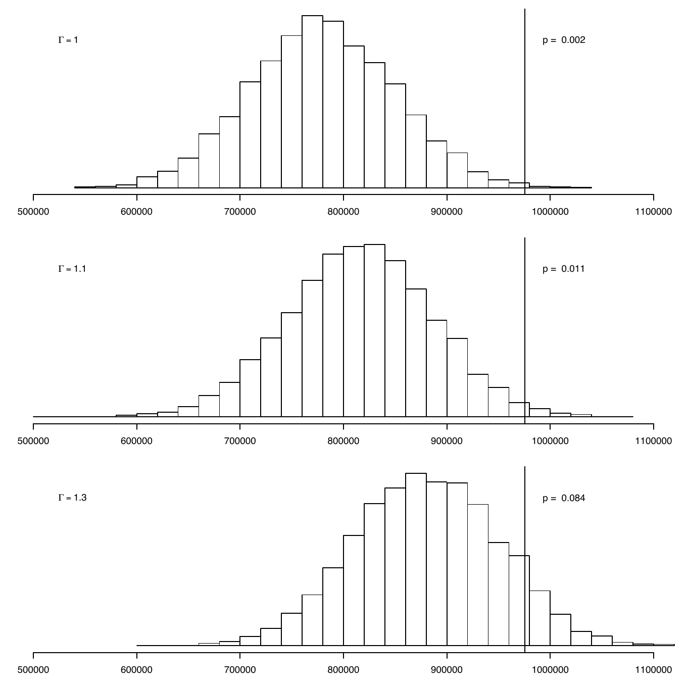
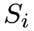
IID Bernoulli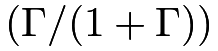
, based on the matched LaLonde data.-value as a function of , based on the matched LaLonde data.98.2 Two examples from Rosenbaum’s packages
The erpcp dataset is from the R package sensitivitymw. It contains matched pairs of a welder and a control, based on observed covariates age and smoking. The outcome is the DNA elution rate. Figure 25(a) shows the histogram of the within-pair differences of the outcomes and the -value against based on the pair -statistic. The following R code generates Figure 25(a).
The lead250 dataset is from the R package sensitivitymw. It contains matched pairs of a daily smoker and a control of nonsmoker, based on observed covariates gender, age, race education level, and household income from NHANES. The outcome is the blood lead level in . Figure 25(b) shows the histogram of the within-pair differences of the outcomes and the -value against based on the pair -statistic. The following R code generates Figure 25(b).
-value as a function of 99 Homework Problems
19.1 A model for Assumption 19.1
Assumption 19.1 has the following equivalent form.
Assumption 19.2
The propensity score satisfies the following model
where is an unknown function and is a a bounded unobserved covariate for unit .
Remark: Rosenbaum, 2002b (, page 108) also shows that if Assumption 19.1 holds, then Assumption 19.2 must hold for some ’s. Assumption 19.2 may be easier to interpret because  measures the log of the conditional odds ratio of on the treatment; see Chapter 31.F for the interpretation of the coefficients in the logistic regression.
measures the log of the conditional odds ratio of on the treatment; see Chapter 31.F for the interpretation of the coefficients in the logistic regression.
19.2 Application of Rosenbaum’s approach
Re-analyze Example 10.3 using Rosenbaum’s approach based on matching.
19.3 Recommended reading
Rosenbaum, (2015) provides a tutorial for his two R packages for sensitivity analysis with matched observational studies.